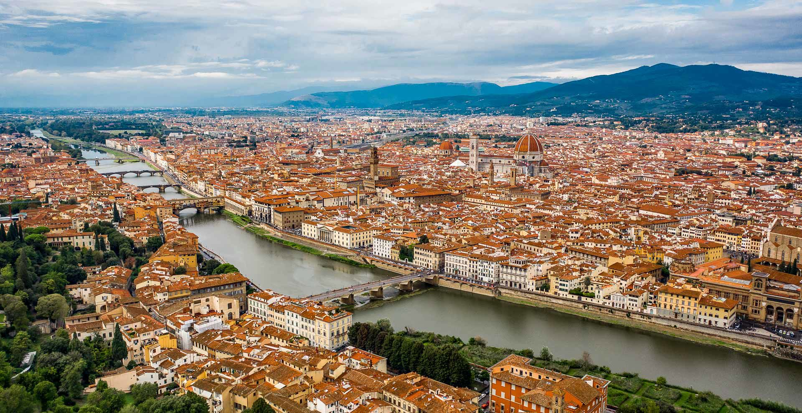
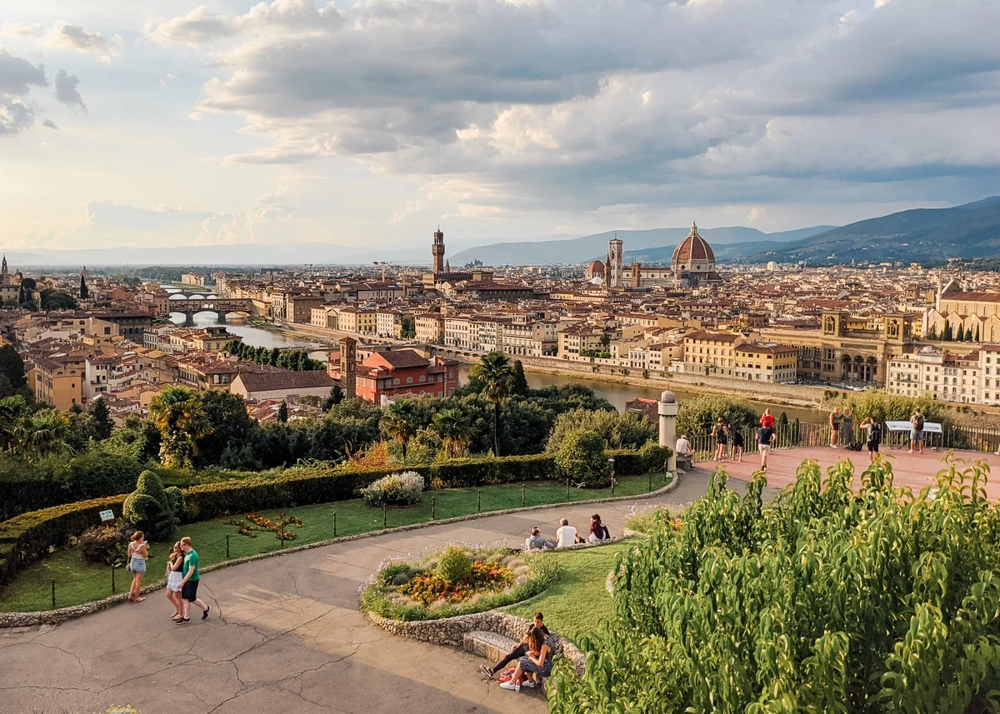
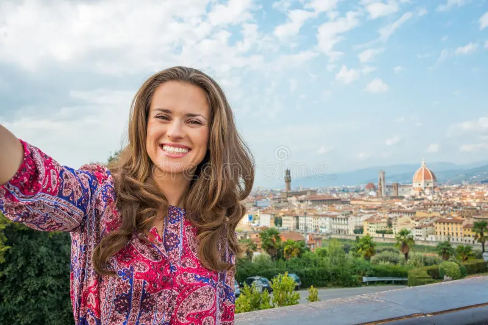
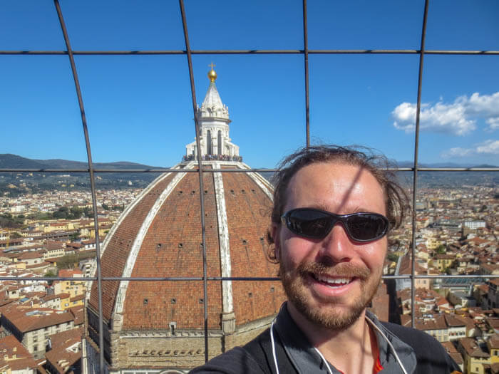
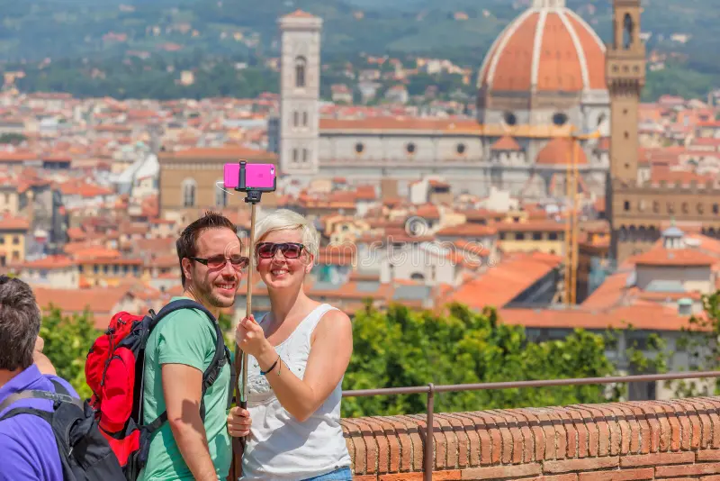
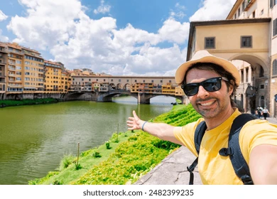

Introduction
Florence is a major city in Italy, the capital and cultural center of the Tuscany region. It is the
seat of the Archdiocese of Florence.
The city, located on both banks of the Arno River in its valley, has a long history. It was ruled by
the Medici family for centuries. It was also the capital of the Kingdom of Italy between 1865 and
1871.
Florence lies along the middle course of the Arno, on the floodplain (Valdarno Valley) bordered by
the hills of Careggi, Fiesole, Settignano, Arcetri, and Bellosguardo, mostly on the north bank of
the river, at an altitude of 50 meters above sea level.
The capital of Tuscany has nearly 400.000 inhabitants. Known as the capital of arts, it has
countless sculptures, piazzas, civic and religious buildings, palaces, markets, and museums which
make it a unique destination.
Famous worldwide for its perfect preservation, Florence stands as it did during the fifteenth
century. Nevertheless, thanks to the modernization projects commissioned by the city’s town hall,
Florence is a perfect mix of modernity and classicism. One of the new projects worth highlighting is
the new high-speed railway station.
John Doe
"I am in Florence now and I can tell you 3 days here is not enough for me! "

Jane Smith
"Loved the Duomo and the gelato! Florence has the best food scene."

Alex Johnson
"A must-visit city for culture lovers. The museums are incredible!"

Maria Garcia
"Walking through Florence feels like stepping back in time. Highly recommend!"

Luca Rossi
"Florence's piazzas are perfect for relaxing. The Ponte Vecchio is a must-see!"